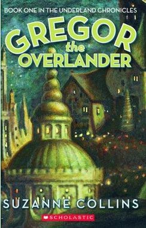
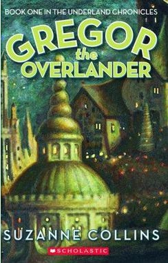
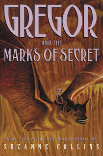
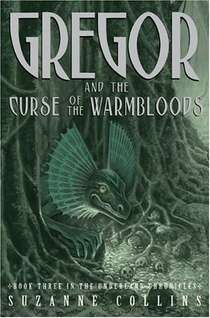
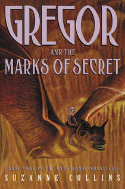
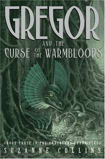
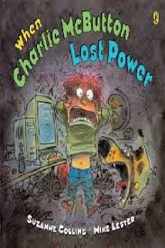

Welcome

Hi! Thanks for visiting my website. Here’s a picture of me with a rat in Central Park. If you’ve read my fantasy series, The Underland Chronicles, you will have a clue as to why I chose this photo. If not, you may want to click around and find out a little more about my books. Or visit the Scholastic website for cool games and info!
Check out Scholastic's Underland Chronicles website by clicking my image!
The Hunger Games


.jpg)
Mockingjay
Katniss Everdeen, girl on fire, has survived, even though her home has been destroyed. There are rebels. There are new leaders. A revolution is unfolding.(Scholastic Press, 2010)
"But being the Mockingjay comes with a price as Katniss must come to terms with how much of her own humanity and sanity she can willingly sacrifice for the cause, her friends, and her family. Collins is absolutely ruthless in her depictions of war in all its cruelty, violence, and loss, leaving readers, in turn, repulsed, shocked, grieving and, finally, hopeful for the characters they've grown to empathize with and love. Mockingjay is a fitting end to the series that began with The Hunger Games (2008) and Catching Fire (2009) and will have the same lasting resonance as William Golding's Lord of the Flies and Stephen King's The Stand." --School Library Journal
"The final installment, the grimmest yet, is a riveting meditation on the costs of war...Clear your schedule before you start: This is a powerful, emotionally exhausting final volume." --People Magazine,4 OUT OF 4 STARS
Catching Fire
Much to her shock, Katniss has fueled an unrest she's afraid she cannot stop. And what scares her more is that she's not entirely convinced she should try. As time draws near for Katniss and Peeta to visit the districts on the Capitol's cruel Victory Tour, the stakes are higher than ever. If they can't prove, without a shadow of a doubt, that they are lost in their love for each other, the consequences will be horrifying.(Scholastic Press, 2009)
NEW YORK TIMES NOTABLE CHILDREN'S BOOK OF 2010
PUBLISHERS WEEKLY'S BEST BOOKS OF 2010: CHILDREN'S FICTION
The Hunger Games
Katniss is a 16-year-old girl living with her mother and younger sister in the poorest district of Panem, the remains of what used be North America. Long ago the districts waged war on the Capitol and were defeated. As part of the surrender terms, each district agreed to send one boy and one girl to appear in an annual televised event called, "The Hunger Games." The terrain, rules, and level of audience participation may change but one thing is constant: kill or be killed. When her sister is chosen by lottery, Katniss steps up to go in her place.(Scholastic Press, 2008)
"At its best the trilogy channels the political passion of “1984,” the memorable violence of “A Clockwork Orange,” the imaginative ambience of “The Chronicles of Narnia” and the detailed inventiveness of “Harry Potter.” The specifics of the dystopian universe, and the fabulous pacing of the complicated plot, give the books their strange, dark charisma." --The New York Times, Katie Roiphe
A CHRISTIAN SCIENCE MONITOR'S BEST CHILDREN'S BOOKS OF 2010
 

 



Other Works

Year of the Jungle
A PUBLISHERS WEEKLY BEST BOOK OF 2013: PICTURE BOOK
65TH ANNUAL CHRISTOPHER AWARD FOR BOOKS FOR YOUNG PEOPLE